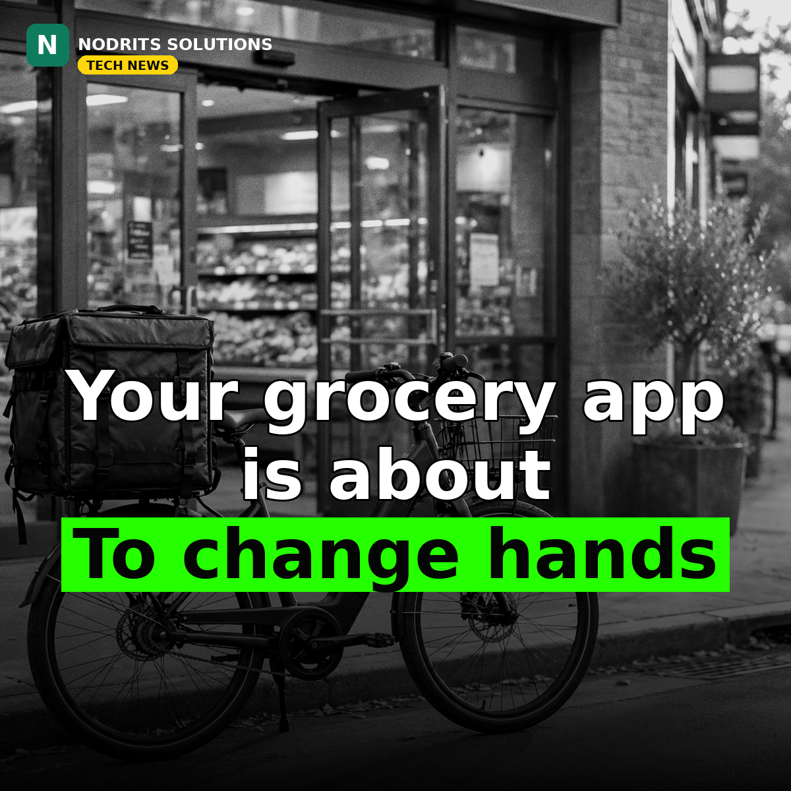

DoorDash Is Buying Instacart for $17 Billion: Grocery and Restaurant Delivery Just Merged

Your grocery app is about to change hands. DoorDash announced on October 29, 2026 that it will buy Instacart for $65 a share — an equity value of about $17 billion — folding America's dominant grocery delivery app into the company that already controls most of its restaurant takeout orders.
What happened
The agreement, approved by both companies' boards, offers Instacart shareholders $65 per share, a 26% premium to the stock's closing price on October 22, before reports of deal talks first emerged. At least 75% of the consideration will be cash, with DoorDash stock capped at 25%; shareholders may elect all cash, all stock, or a mix, subject to proration. The deal is not done yet: it requires Instacart shareholder approval and regulatory approvals, including US antitrust clearance and approvals in Canada and Israel, with closing expected at the end of 2027 or in the first half of 2028. The two companies will continue to operate separately until then, and DoorDash says it intends to retain the Instacart brand, app and technology products after closing. Shareholders representing about 19% of Instacart's outstanding shares have already agreed to vote in favour. It is DoorDash's largest deal to date, surpassing its roughly $8 billion buyout of Finnish food-delivery company Wolt. Instacart, whose registered corporate name is Maplebear, separately reported third-quarter revenue of $1.095 billion, up 17% year over year.
Why it matters
Delivery is consolidating around a shrinking number of giants. DoorDash's pitch is scale: combining its restaurant and local delivery network with Instacart's grocery technology and long supermarket relationships, so each platform can list the other's businesses and take on deep-pocketed retailers such as Walmart and Amazon. The risk is equally plain. The US Federal Trade Commission launched an inquiry into delivery platforms' pricing and driver-compensation algorithms a day before the announcement, and the main risk analysts name for this deal is regulatory approval. Consolidation can cut costs through scale — or it can cut choice, raise fees and squeeze the restaurants, grocers and couriers who depend on the platform. Which outcome wins depends less on the press release than on the regulators and the integration.
What it means for you
If your business sells through delivery apps, do not depend on one marketplace. Stay listed on multiple apps, build a direct ordering channel — even a simple one — alongside them, and keep your own customer list: it is the asset no acquisition can take from you. Watch fee and contract terms as the platforms consolidate, and renegotiate before renewal dates, not after.
The Nodrits take
Bigger networks can mean faster, cheaper delivery — or fewer choices and higher fees. The deal will not close for over a year, and that year is when the terms get set. Will bigger delivery giants mean lower fees for you, or fewer choices? Tell us in the comments on today's post.
Need a website, SaaS product or AI workflow built right?
Nodrits Solutions designs, develops and automates for businesses in Pakistan, the USA, UK, UAE and Saudi Arabia.
Talk to Nodrits →Sources: DoorDash and Instacart's announcement (October 29, 2026) via Reuters, The Guardian, AP and company statements. Deal terms, premium and closing timeline as announced; regulatory outcome is pending.. Published October 31, 2026.